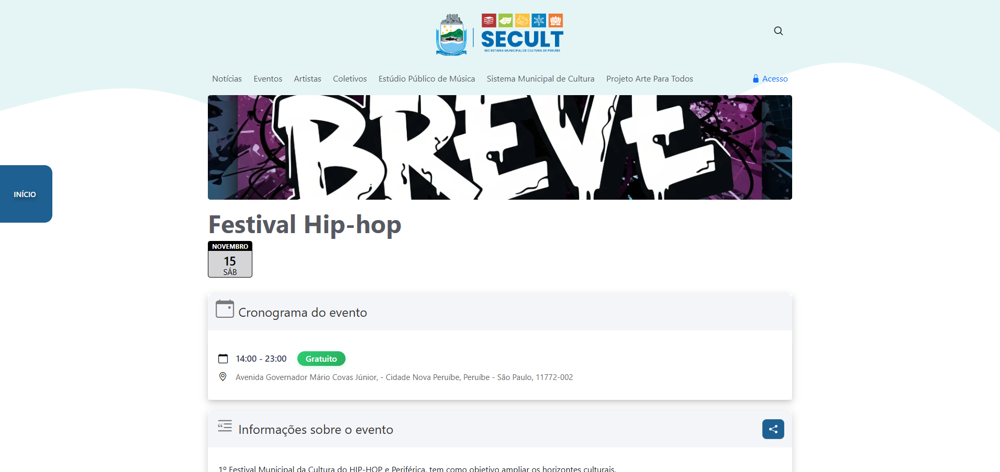
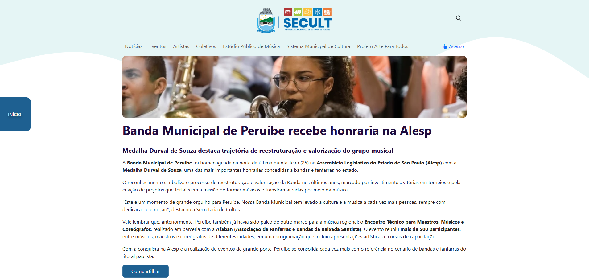
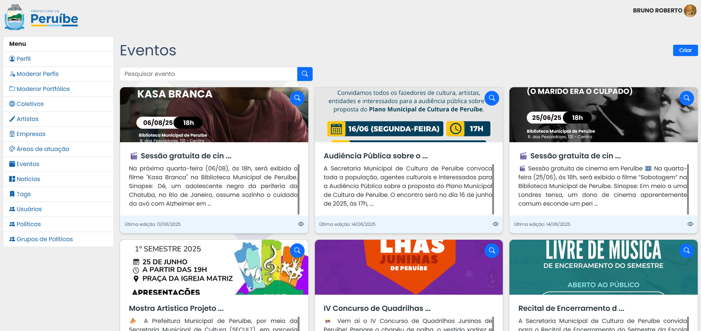
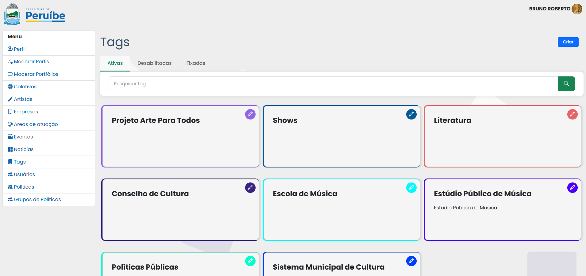

Case 01 · Portal público
Portal da Cultura de Peruíbe
Uma plataforma para aproximar a comunidade das notícias, eventos e iniciativas culturais da cidade.

Visão geral
Conteúdo cultural organizado para ser encontrado com facilidade.
O Portal da Cultura foi desenvolvido para aproximar os munícipes das notícias, eventos e iniciativas culturais de Peruíbe. A experiência concentra informações importantes em uma navegação direta e adaptada a diferentes telas.
Gestão de conteúdo
Além da área pública, o projeto inclui um sistema interno para gerenciar artistas, eventos, notícias e tags. Assim, a equipe da Secretaria de Cultura consegue publicar e organizar conteúdo de forma prática.
Experiência responsiva
A interface prioriza leitura, hierarquia visual e acesso rápido às informações, mantendo consistência entre computadores e dispositivos móveis.
Interface
Uma experiência pública e um sistema de gestão.
Capturas reais das áreas públicas e administrativas do projeto.



